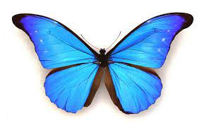
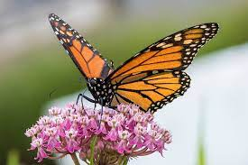
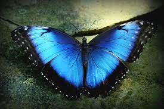
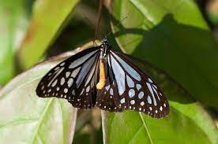
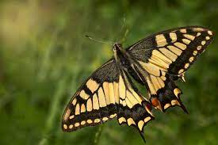

The beauty of butterflies
Butterflies (Rhopalocera) are insects that have large, often brightly coloured wings, and a conspicuous, fluttering flight.

Four beautiful butterfly species
Monarch Butterfly
Blue Morpho Butterfly
Pieridae Butterfly
Swallowtail Butterfly
Butterflies are beautiful flying insects with large, often colorful wings. They are found all over the world, except for Antarctica. Butterflies go through a complete metamorphosis, meaning that they go through four distinct stages in their lives: egg, larva, pupa, and adult.
"Papiliones nos docent mutationem pulchram esse."
Call to action its time!
Sign up for something you will never see before amazing!